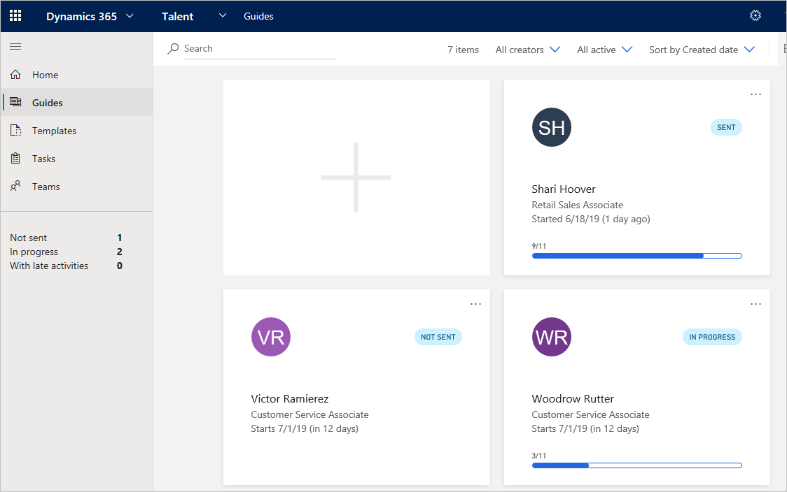

Anzeigen des Status des Onboarding von Mitarbeitern und Ihrer Aufgaben
Important
Dynamics 365 Talent: Attract- und Onboard-Apps werden eingestellt. Weitere Informationen finden Sie unter Einstellen von Dynamics 365 Talent: Attract- und Onboard-Apps.
Microsoft Dynamics 365 Talent: Onboard lässt Sie den Status anzeigen, den Ihre Neueinstellungen in den Onboarding-Aktivitäten durchführen. Sie können alle Aufgaben auch anzeigen, die von Ihnen Oboarding Anleitungen zugewiesen wurden.
Anzeigen des Status vom Onboarding von Mitarbeitern
Wählen Sie im linken Menü Anleitungen aus. Sie sehen einen Überblick über den Fortschritt aller Onboarding Anleitungen, die Sie gesendet haben.

Um zu blättern, wählen Sie die Anleitung, die Sie anzeigen möchten.
Wählen Sie die Registerkarte Aktivitäten aus, um zu ermitteln, welche Aktivitäten der neuen Mitarbeiters beendet ist.

Anzeigen der Onboarding-Aufgaben, die Ihnen zugewiesen sind
- Wählen Sie im linken Menü Aufgaben aus. Finden Sie eine Übersicht über alle Onboarding Aufgaben, die Ihnen von den Onboarding Anleitungen zugeordnet wurden, die an Mitarbeiter gesendet wurden.
- Um zu blättern, wählen Sie die gewünschte Aufgabe aus.
- Verfolgen Sie den neuen Mitarbeiter nach Bedarf.
- Wenn Sie die Aufgabe abgeschlossen haben, markieren Sie diese als abgeschlossen, indem Sie die Einträge durch ein Häkchen im Kreis hinzufügen.